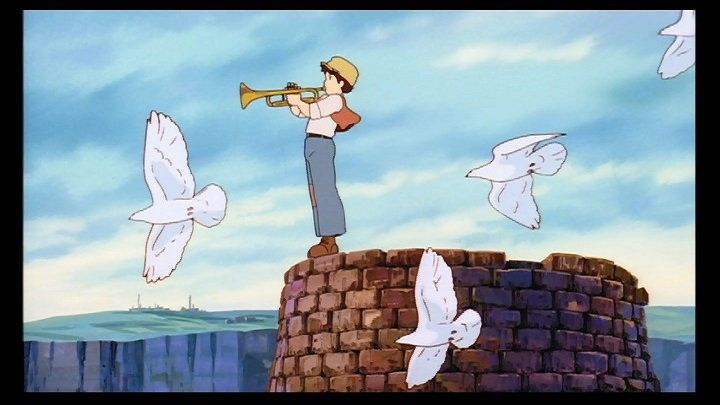

While technically not the first Studio Ghibli film I've ever seen, 1986's "Castle in the Sky" (originally known as "Laputa" in Japan) was the first Ghilbi film I purchased blind on home video, out of growing interest of the pedigree from the studio's talent. In the Walt Disney DVD release, John Lasseter introduces the movie, citing it as his personal favorite, and I share that sentiment. It shows its age today, but it is a near-perfect example of how to do a great adventure movie.Loosely inspired by the style of stories by the likes of Jules Verne, the film follows a girl named Sheeta with a magical crystal necklace, and a boy named Patsu who finds her. Starting at a breakneck-pace, the opening scenes has Sheeta escaping captors keeping her for her mysterious crystal, and Patsu takes responsibilty in helping her escape from pirates and the government, with the help of friends throughout his small mining town. Eventually we learn that the necklace is the key to a legendary lost city known as Laputa, said to only be myth, but all parties involved become invested in ffinding the floating city in the sky, each for their own reasons. The first half of the film (focusing on the chase scenes) is perfect, a great sense of fun and comedy as different factions are introduced on the wild goose chase. By the second film, the lore and themes (which lean heavily into "protecting the planet, humans are bad, etc.") change enough to feel jarring, still fascinating to watch, but at a slower pace that begins to feel boring, if only slightly. Not unlike "Nausicaa Of the Valley of the Wind" (also made around the same time), "Castle in the Sky" feels too jam-packed with story, and some of the ideas could have been split to another movie. The visulals do look dated today, especially the character designs. But you might be surprised at how nice it hold up too, Some of the chase scenes are well animated, and the trumpet-at-sunrise-scene remains one of the most beautiful scenes I've ever seen. Speaking of that scene, the music is beautiful and memorable throughout. Interestingly, two different music tracks exist, a modern orchestrated one and a original synth-based one: while the Disney DVD only has one, I distinctly noticed in GKIDS theatrical re-reelase (2017) that the alternate audio was used, which was different enough to give scenes a different feel, although I can't say one is better than the other (and I can't confirm which track appears on GKIDS' DVD release). The English dub is good, nailing the comedy for the pirates, but faltering a little in characters like Sheeta (who has a out-of-place Australian accent).  The writing and direction in "Castle in the Sky" further proved early in Hayao Miyazaki's career that he is a great creative force that fully understands family adventure. it's a timeless classic.
- "Ani" More reviews can be found at : https://2danicritic.github.io/ Previous review: review_Canaan Next review: review_Cat_Planet_Cuties